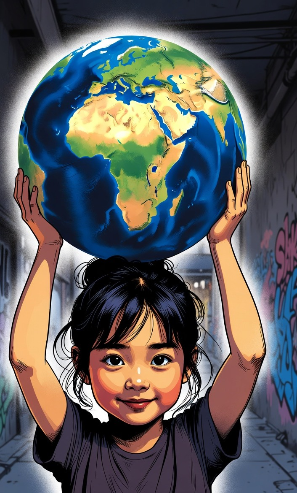

Participer à la naissance d’une fondation
Rejoindre la Fondation XXVII dès son lancement, c’est inscrire son nom dans l’acte fondateur. Nous cherchons des mécènes, des partenaires institutionnels et des collaborateurs qui partagent la conviction que l’art est un droit, pas un privilège.
Votre soutien dès l’origine vous inscrit dans l’histoire de la Fondation. Votre nom figure dans tous les documents institutionnels fondateurs.
Une fondation présente sur cinq continents, avec des relais à Genève, Paris, São Paulo, Shanghai et Tokyo.
Rencontres avec les artistes, invitations aux premières expositions et aux événements de lancement dans chaque territoire.
Chaque partenariat finance directement l’accès à l’art pour des jeunes créateurs qui n’auraient pas eu cette chance sans vous.
Devenir mécène ou partenaire
La Fondation XXVII privilégie une prise de contact directe afin de construire des engagements adaptés : soutien financier, mécénat de compétence, partenariat institutionnel ou accompagnement d’un programme artistique.
